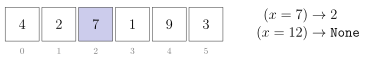
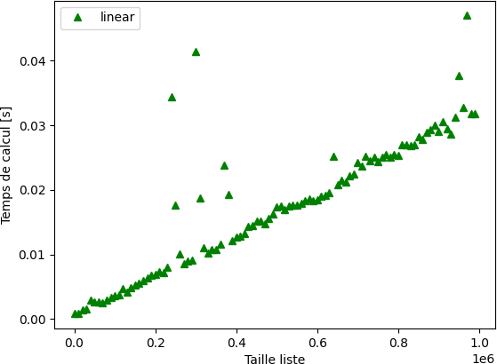
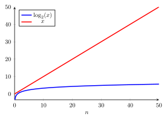
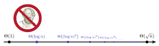
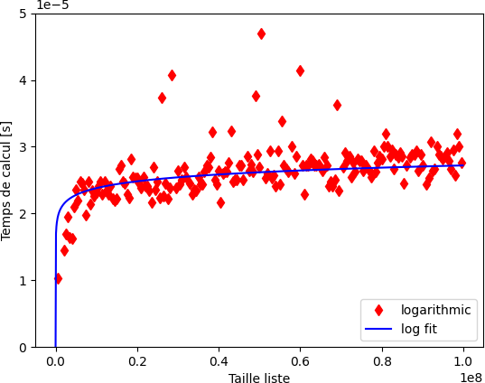

def serie_geom(a, n):
s = 0
for i in range(n):
s = s * a + 1
return s
print(serie_geom(2, 5))31Cours 8
Au dernier cours, on a vu qu’un algorithme doit avant tout être correct : produire la bonne sortie pour toute instance du problème. Le tester sur quelques instances ne suffit donc pas.
Comment se convaincre qu’un algorithme calcule bien ce qu’il est censé calculer ?
while ou for, c’est plus compliqué !L’utilisation d’un invariant de boucle pour prouver la correctitude d’un programme se fait en trois étapes :
(Avec ces deux étapes, on a prouvé que l’invariant reste vrai à toutes les itérations de la boucle.)
Problème : pour un réel \(a\) et un entier \(n \geq 0\) en entrée, écrire un algorithme (sous forme de fonction Python) qui retourne
\[\sum_{k=0}^{n-1} a^k = 1 + a + a^2 + \cdots + a^{n-1}.\]
Voici une solution :
def serie_geom(a, n):
s = 0
for i in range(n):
s = s * a + 1
return s
print(serie_geom(2, 5))31Prouvons que cet algorithme calcule bien la somme demandée !
def serie_geom(a, n):
s = 0
for i in range(n):
s = s * a + 1
return sInvariant de boucle : Au début de la \(i\)ème itération de la boucle for, \(s\) contient la valeur \[\sum_{k=0}^{i-1} a^k = 1 + a + \cdots + a^{i-1}.\]
for, \(s = 0\), ce qui correspond bien à la somme vide.Remarque. Une somme de la forme \(\sum_{k=i}^{j} \ldots\) avec \(j < i\) est dite vide et vaut \(0\).
s = s * a + 1. La valeur de \(s\) devient donc \[(1 + a + \cdots + a^{i-1})a + 1 = (a + a^2 + \cdots + a^{i}) + 1 = \sum_{k=0}^{i} a^k\] à la fin de la \(i\)ème itération (et au début de la \((i+1)\)ème).Problème : étant donné une liste non vide de nombres réels, calculer le maximum.
Reprenons l’algorithme du dernier cours :
def maximum(L):
n = len(L)
le_max = L[0]
for i in range(1, n):
if L[i] > le_max:
le_max = L[i]
return le_max
print(maximum([10, -3, 7, 2, 6, 7]))10Prouvons que cet algorithme calcule bien le maximum !
Invariant de boucle : Au début de la \(i\)ème itération de la boucle for, le_max est le maximum de L[0], …, L[i-1].
def maximum(L):
n = len(L)
le_max = L[0]
for i in range(1, n):
if L[i] > le_max:
le_max = L[i]
return le_maxInvariant de boucle : Au début de la \(i\)ème itération de la boucle for, le_max est le maximum de L[0], …, L[i-1].
Initialisation : Avant le début de la boucle for, donc au début de l’itération i = 1, le_max est égal à L[0], qui est bien le maximum du seul élément L[0].
Maintenance : Supposons l’invariant vrai au début de la \(i\)ème itération.
L[i] > le_max, alors le_max prend la valeur L[i], qui est strictement plus grand que tous les éléments précédents.le_max ne change pas, et il est supérieur ou égal à L[i].Dans les deux cas, au début de la prochaine itération, le_max est le maximum de L[0], …, L[i].
Terminaison : À la sortie de la boucle (c’est-à-dire au début de l’itération i = n, qui n’aura pas lieu), le_max est le maximum de L[0], …, L[n-1], donc de la liste entière.
for sur un range fait un nombre d’itérations fixé à l’avance : elle termine toujours.while, il faut prouver que l’algorithme termine.Rappel : \(a \bmod b\) est le reste de la division euclidienne de \(a\) par \(b\). En Python : a % b.
Preuve :
On peut utiliser ce fait pour créer un algorithme.
def pgcd(a, b):
i = a
k = b
while k > 0:
i, k = k, i % k
return i
print(pgcd(3060, 924))12print(pgcd(2437, 181))1while (\(i \bmod k < k\) et ce sont des entiers).def pgcd(a, b):
i = a
k = b
while k > 0:
i, k = k, i % k
return iPourquoi cet algorithme rend-il une valeur correcte ?
À chaque itération de la boucle, \(\operatorname{pgcd}(i, k) = \operatorname{pgcd}(a, b)\).
\[\begin{aligned} \operatorname{pgcd}(3060,924) &= \operatorname{pgcd}(924,288) \\ &= \operatorname{pgcd}(288,60) \\ &= \operatorname{pgcd}(60, 48) \\ &= \operatorname{pgcd}(48, 12) \\ &= \operatorname{pgcd}(12, 0) = 12. \end{aligned}\]
\[\begin{aligned} \operatorname{pgcd}(2437, 181) &= \operatorname{pgcd}(181, 84) \\ &= \operatorname{pgcd}(84, 13) \\ &= \operatorname{pgcd}(13, 6) \\ &= \operatorname{pgcd}(6, 1) \\ &= \operatorname{pgcd}(1, 0) = 1. \end{aligned}\]
Étant donnés une liste L de nombres et un nombre x, trouver x dans L.
i tel que L[i] == x si x apparaît dans LNone
L.index(x), dont on ne connaît pas la complexité !Idée : parcourir la liste du début à la fin, et s’arrêter dès qu’on trouve x.
def r_lin(L, x):
n = len(L)
for i in range(n):
if L[i] == x:
return i
return None
L = [4, 2, 7, 1, 9, 3]
print(r_lin(L, 7))2def r_lin(L, x):
n = len(L)
for i in range(n):
if L[i] == x:
return i
return Noner_lin retourne i, alors L[i] == x : c’est le test fait juste avant.r_lin retourne None, il faut prouver que x n’est pas dans L.Invariant de boucle : Au début de la \(i\)ème itération de la boucle for, x n’est aucun des éléments L[0], …, L[i-1].
i = 0, il n’y a encore aucun élément à examiner.L[i] == x, la fonction retourne i. Sinon, x n’est aucun des éléments L[0], …, L[i] au début de la prochaine itération.i = n, qui n’aura pas lieu), x n’est aucun des éléments L[0], …, L[n-1] : il n’est pas dans L.x est au début de L, une seule itération suffit. Mais dans le pire des cas (quand x est à la fin de L, ou n’y est pas), la boucle fait len(L) = n itérations.r_lin a donc une complexité \(\Theta(n)\).
r_lin est asymptotiquement optimal.Recherche de 17 : étape 1 \[[-7, -3, -1, 0, 1, 2, 5, 6, 8, {\color{goldenrod}{\mathbf{9}}}, 13, 17, 18, 24, 26, 27, 32, 38, 47, 51]\] Milieu : 9. Comme \(17 > 9\), on cherche dans la moitié droite.
Recherche de 17 : étape 2 \[[{\color{gray}{-7, -3, -1, 0, 1, 2, 5, 6, 8, 9,}}\; 13, 17, 18, 24, {\color{goldenrod}{\mathbf{26}}}, 27, 32, 38, 47, 51]\] Milieu : 26. Comme \(17 < 26\), on cherche à gauche.
Recherche de 17 : trouvé ! \[[{\color{gray}{-7, -3, -1, 0, 1, 2, 5, 6, 8, 9,}}\; 13, {\color{goldenrod}{\mathbf{17}}}, 18, 24, {\color{gray}{26, 27, 32, 38, 47, 51}}]\] Milieu : 17. Trouvé ! Seulement 3 étapes (au lieu de 12).
Recherche de 31 : étape 1 \[[-7, -3, -1, 0, 1, 2, 5, 6, 8, {\color{goldenrod}{\mathbf{9}}}, 13, 17, 18, 24, 26, 27, 32, 38, 47, 51]\] Milieu : 9. Comme \(31 > 9\), on cherche à droite.
Recherche de 31 : étape 2 \[[{\color{gray}{-7, -3, -1, 0, 1, 2, 5, 6, 8, 9,}}\; 13, 17, 18, 24, {\color{goldenrod}{\mathbf{26}}}, 27, 32, 38, 47, 51]\] Milieu : 26. Comme \(31 > 26\), on cherche à droite.
Recherche de 31 : étape 3 \[[{\color{gray}{-7, -3, -1, 0, 1, 2, 5, 6, 8, 9, 13, 17, 18, 24, 26,}}\; 27, 32, {\color{goldenrod}{\mathbf{38}}}, 47, 51]\] Milieu : 38. Comme \(31 < 38\), on cherche à gauche.
Recherche de 31 : étape 4 \[[{\color{gray}{-7, -3, -1, 0, 1, 2, 5, 6, 8, 9, 13, 17, 18, 24, 26,}}\; {\color{goldenrod}{\mathbf{27}}}, 32, {\color{gray}{38, 47, 51}}]\] Milieu : 27. Comme \(31 > 27\), on cherche à droite.
Recherche de 31 : pas trouvé ! \[[{\color{gray}{-7, -3, -1, 0, 1, 2, 5, 6, 8, 9, 13, 17, 18, 24, 26, 27,}}\; {\color{goldenrod}{\mathbf{32}}}, {\color{gray}{38, 47, 51}}]\] \(32 \neq 31\). Pas trouvé ! Seulement 5 étapes (au lieu de 20).
Remarque. Cette méthode s’appelle la recherche binaire (ou recherche dichotomique).
Entrée : une liste L de nombres, triée par ordre croissant, et un nombre x.
def r_bin(L, x):
n = len(L)
bas = 0
haut = n - 1
while haut >= bas:
milieu = (bas + haut) // 2
if L[milieu] == x:
return milieu
elif L[milieu] > x:
haut = milieu - 1
else:
bas = milieu + 1
return None
L = [-7,-3,-1,0,1,2,5,6,8,9,13,17,18,24,26,27,32,38,47,51]
print(r_bin(L, 17))
print(r_bin(L, 31))11
NoneComme on a une boucle while, on doit vérifier que l’algorithme se termine (via un variant de boucle) et qu’il répond correctement (via un invariant de boucle).
def r_bin(L, x):
n = len(L)
bas = 0
haut = n - 1
while haut >= bas:
milieu = (bas + haut) // 2
if L[milieu] == x:
return milieu
elif L[milieu] > x:
haut = milieu - 1
else:
bas = milieu + 1
return NoneVariant de boucle :
haut - bas
haut - bas est positif (ou alors on ne rentre pas dans la boucle).haut - bas décroît d’au moins 1 (ou on sort de la boucle).haut - bas < 0.Invariant de boucle :
Si x est dans L, alors il est parmi L[bas], …, L[haut].
Initialisation : Vrai au départ, car bas = 0 et haut = n - 1 : ce sont tous les éléments de L.
Maintenance : Supposons l’invariant vrai au début d’une itération, et L[milieu] différent de x (sinon, la fonction retourne milieu).
L[milieu] > x : comme L est triée, L[milieu], …, L[haut] sont tous strictement plus grands que x. Si x est dans L, il est donc parmi L[bas], …, L[milieu-1] : l’invariant reste vrai après haut = milieu - 1.L[milieu] < x : de même, L[bas], …, L[milieu] sont tous strictement plus petits que x, et l’invariant reste vrai après bas = milieu + 1.Terminaison : La boucle peut se terminer de deux manières.
milieu, alors clairement L[milieu] == x.None, c’est qu’on est sorti de la boucle avec haut < bas : il ne reste aucun élément entre bas et haut. D’après l’invariant de boucle, x n’est donc pas dans L.while prend un temps constant.Combien de fois faut-il diviser un entier \(n\) par 2 pour arriver jusqu’à 1 ?
Soit \(n\) un entier strictement positif. Dans ce cours, \(\log_2(n)\) est le nombre de fois qu’il faut diviser \(n\) par 2 (division entière) pour arriver à un nombre \(\leq 1\).
| \(n\) | 1 | 2 | \(\color{red}{5}\) | 8 | 16 | 32 | 64 | \(\color{red}{100}\) | 256 | 512 | \(\color{red}{1000}\) |
|---|---|---|---|---|---|---|---|---|---|---|---|
| \(\log_2(n)\) | 0 | 1 | \(\color{red}{2}\) | 3 | 4 | 5 | 6 | \(\color{red}{6}\) | 8 | 9 | \(\color{red}{9}\) |
\(\log_2(n)\) croît vers l’infini quand \(n \to \infty\), mais beaucoup plus lentement que \(n\) :
| \(n\) | \(\log_2(n)\) |
|---|---|
| \(1\,024\) | 10 |
| \(1\,048\,576\) | 20 |
| \(1\,073\,741\,824\) | 30 |
| \(1{,}1 \times 10^{12}\) | 40 |


x pourrait encore se trouver est divisée par \(\sim 2\).x n’est pas dans L).r_bin a donc une complexité \(\Theta(\log n)\).Nombre d’itérations, dans le pire des cas :
| \(n\) | r_lin |
r_bin |
|---|---|---|
| \(10^{3}\) | \(1\,000\) | \(\approx 10\) |
| \(10^{6}\) | \(1\,000\,000\) | \(\approx 20\) |
| \(10^{9}\) | \(1\,000\,000\,000\) | \(\approx 30\) |
